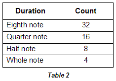
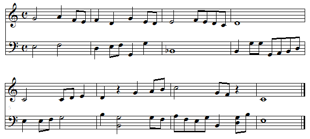

| We can achieve a more uniform distribution of durations by adding some counterpoint. Below is a two-part version of this melody. It has twice as many notes and an identical distribution of duration values. |
|  |
|  |
| While this piece is too short to reasonably be categorized as fractal with respect to duration, it certainly suggests that larger compositions in the same style could possess a self-similar distribution of duration values. |
Return to Duration Scaling.
© 2004 Harlan Brothers